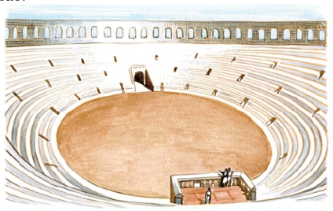

CLASSIS ROMANA
I
text
— Hīc amīcōs nostrōs in mediō cursū relinquimus. Utinam salvī in Graeciam perveniant! Omnia bona iīs optāmus.

* * *
GRAMMATICA LATINA
Coniūnctīvus. Tempus perfectum
Āctīvum:
Iūlius dubitat num magister Mārcum laudāverit.
‘Laudāverit’ est coniūnctīvus temporis praeteritī perfectī. Coniūnctīvus perfectī dēsinit in -erit (pers. III sing.), quod ad īnfīnītīvum perfectī sine -isse adicitur.
Exempla: [1] recitāv|erit; [2] pāru|erit; [3] scrīps|erit; [4] audīv|erit.
Pater fīlium interrogat ‘num bonus discipulus fuerit: num magistrō pāruerit, attentē audīverit, rēctē scrīpserit et pulchrē recitāverit.’
Pater: “Audīsne? Interrogō tē ‘num bonus discipulus fuerīs, num magistrō pāruerīs, attentē audīverīs, rēctē scrīpserīs et pulchrē recitāverīs’.” Fīlius: “Iam tibi dīxī ‘mē industrium fuisse.’ Quārē igitur mē interrogās ‘num bonus discipulus fuerim, num magistrō pāruerim, attentē audīverim, rēctē scrīpserim et pulchrē recitāverim’? Crēde mihi! Nē dubitāverīs dē verbīs meīs!”
Parentēs fīliōs interrogant ‘num bonī discipulī fuerint: num magistrō pāruerint, attentē audīverint, rēctē scrīpserint et pulchrē recitāverint.’
Parentēs: “Audītisne? Interrogāmus vōs ‘num bonī discipulī fuerītis, num magistrō pāruerītis, attentē audīverītis, rēctē scrīpserītis et pulchrē recitāverītis’.” Fīlius: “Iam vōbīs dīximus ‘nōs industriōs fuisse.’ Quārē igitur nōs interrogātis ‘num bonī discipulī fuerīmus, num magistrō pāruerīmus, attentē audīverīmus, rēctē scrīpserīmus et pulchrē recitāverīmus’? Crēdite nōbīs! Nē dubitāverītis dē verbīs nostrīs!”
Sing. Plūr.
Pers. 1 -erim -erīmus
Pers. 2 -erīs -erītis
Pers. 3 -erit -erint
Passīvum:
Pater dubitat num fīlius ā magistrō laudātus sit.
Pater: “Tūne ā magistrō laudātus es?” Fīlius: “Nesciō num laudātus sim!” Pater: “Quōmodo nescīs num laudātus sīs ā magistrō?” Fīlius: “Nesciō quid ab eō dictum sit, nam in lūdō dormīvī!”
Pater dubitat num fīliī ā magistrō laudātī sint.
Pater: “Vōsne ā magistrō laudātī estis?” Fīliī: “Nescīmus num laudātī sīmus!” Pater: “Quīmodo nescītis num laudātī sītis?” Fīliī: “Nescīmus quid magister dīxerit, nam in lūdō dormīvimus!”
Sing. Plūr.
Pers. 1 laudātus sim laudātī sīmus
Pers. 2 laudātus sīs laudātī sītis
Pers. 3 laudātus sit laudātī sint
* * *
AD CAPITVLVM